Next: Using the so1ion module Up: singleion - a Crystal Previous: Doing Single Ion Calculations Contents Index
A simple input file is made up in the following:
It follows an example, we take the values
for NdCu from literature [24]. Note that
if the crystal field parameters are not known, there are different
possibilities to obtain values, such as ab initio calculation,
point charge calculations (use module pointc) and fitting
to experimental data (see section 18).
from literature [24]. Note that
if the crystal field parameters are not known, there are different
possibilities to obtain values, such as ab initio calculation,
point charge calculations (use module pointc) and fitting
to experimental data (see section 18).
#!MODULE=so1ion #<!--mcphas.cf--> # comment followed by # the ion type and the crystal field parameters [meV] IONTYPE=Nd3+ GJ=0.727273 # - note you can also do any pure spin problem by entering e.g. IONTYPE=S=2.5 B20= 0.116765 B22 = 0.134172 B40 = 0.0019225 B42 = 0.0008704 B44 = 0.0016916 B60 = 0.0000476 B62 = 0.0000116 B64 = 0.0000421 B66 = 0.0003662 # instead of the Stevens parameters Blm # second order crystal field parameters Dx^2 Dy^2 and Dz^2 can be entered in meV # - this corresponds to the Hamiltonian H=+Dx2 Jx^2+Dy2 Jy^2+Dz2 Jz^2 Dx2=0.1 Dy2=0 Dz2=0.4
singleion -r Nd3p.sipf 20 0 0 0 0 0 0
Here Nd3p.sipf refers to the name of the single ion property file, the numbers 20 0 0 0 0 0 0 indicate the temperature in Kelvin, the 3 components of the applied magnetic field in Tesla and the 3 components of the exchange field in meV, respectively. Files Nd3p.sipf.levels.cef, Nd3p.sipf.trs and _Nd3p.sipf are generated in directory results, which must exist in order to run the program. _Nd3p.sipf contains the same information as the input file Nd3p.sipf, however it is not just copy, but formatted newly by the program singleion. In particular all numerical values are taken from the internal storage, thus this file can be used to check, whether the input file was read correctly (a typical error which can be detected this way would be to enter a number as ”4,25” instead of ”4.26” (correct way). In the first case a wrong number will be read and used in the calculation. The other output files of program singleion contain the results of the calculation, i.e. the diagonalisation of the Hamilton operator and the neutron scattering cross section. The program singleion outputs a variety of results, such as eigenvectors and energies of the crystal field states. In addition it provides the neutron powder cross section for each crystal field transition (in barn/sr) at a given temperature according to the formula
| 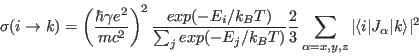 | (7) |
Note: in this calculation energy and Q dependence
of the double differential scattering cross section are not considered and
integration over all energies and scattering angles has been performed.
In order to get a more realistic scattering intensity, the
form factor (giving a dependence), the
factor  and the Debye Waller factor 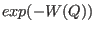 should be considered.
and the Debye Waller factor 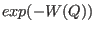 should be considered.
Here comes the output file results/Nd3p.sipf.levels.cef:
#
#
#!d=10 sipffile=Nd3p.sipf T= 20 K Hexta=0 T Hextb=0 T Hextc=0 T Hxc1=0 meV Hxc2=0 meV
Hxc3=0 meV Ia=0 Ib=-1.25627e-15 Ic=5.58172e-16
#! Eigenvalues = -5.85363 -5.85363 -2.94823 -2.94823 -0.86682 -0.86682 1.39302
1.39302 8.27566 8.27566
#Eigenvectors [as colunmns]
#Real Part
-0.022805 -0.042996 +0.025080 -0.000746 -0.000979 +0.009997 +0.242313 -0.000570 +0.968599 +0.000466
+0.786799 -0.417315 -0.009191 -0.309074 -0.119114 -0.011666 +0.000725 +0.308423 -0.000020 +0.041658
+0.174846 +0.329651 -0.305620 +0.009088 +0.070534 -0.720191 -0.469697 +0.001105 +0.151679 +0.000073
-0.203103 +0.107725 -0.008431 -0.283518 +0.671893 +0.065804 +0.001456 +0.618963 -0.000080 +0.166744
-0.052032 -0.098100 +0.853917 -0.025393 +0.007647 -0.078084 -0.492365 +0.001158 +0.096278 +0.000046
+0.098100 -0.052032 +0.025393 +0.853917 -0.078084 -0.007647 +0.001158 +0.492365 -0.000046 +0.096278
+0.107725 +0.203103 -0.283518 +0.008431 -0.065804 +0.671893 -0.618963 +0.001456 +0.166744 +0.000080
-0.329651 +0.174846 -0.009088 -0.305620 -0.720191 -0.070534 +0.001105 +0.469697 -0.000073 +0.151679
-0.417315 -0.786799 -0.309074 +0.009191 +0.011666 -0.119114 -0.308423 +0.000725 +0.041658 +0.000020
+0.042996 -0.022805 +0.000746 +0.025080 +0.009997 +0.000979 -0.000570 -0.242313 -0.000466 +0.968599
#Imaginary Part
0 0 0 0 0 0 0 0 0 0
0 0 0 0 0 0 0 0 0 0
0 0 0 0 0 0 0 0 0 0
0 0 0 0 0 0 0 0 0 0
0 0 0 0 0 0 0 0 0 0
0 0 0 0 0 0 0 0 0 0
0 0 0 0 0 0 0 0 0 0
0 0 0 0 0 0 0 0 0 0
0 0 0 0 0 0 0 0 0 0
0 0 0 0 0 0 0 0 0 0
Here comes the output file results/Nd3p.sipf.trs:
#output file of program mcdisp version 5.2Sat Oct 31 04:57:16 2015
#!<--mcphas.mcdisp.trs-->
#*********************************************************************
# mcdisp - program to calculate the dispersion of magnetic excitations
# reference: M. Rotter et al. J. Appl. Phys. A74 (2002) 5751
# M. Rotter J. Comp. Mat. Sci. 38 (2006) 400
#*********************************************************************
#(*)The unpolarized powder average neutron cross section sigma for each transition
# is calculated neglecting the formfactor, the Debye Wallerfactor, factor k'/k as follows:
#--------------------------------------------------------------
# Transition intensities in barn/sr. |
# |
# = |
# | 2 |
# | = const wi |<i|M |k>| |
# | T |
# = |
# E -> E |
# i k |
# |
# with |
# |
# - E /T |
# e i |
# wi = const -------------- |
# ---- - E /T |
# > n e i |
# ---- i |
# i |
# |
# |
# ----- |
# 2 2 \ 2 |
# |<i,r|M |k,s>| = --- > |<i,r|M -<M >|k,s>| |
# T 3 / u u |
# ----- |
# u = x,y,z |
# |
# |
# and |
# |
# 1 2 |
# const = ( --- r ) |
# 2 0 |
# |
# -12 |
# r = -0.53908* 10 cm |
# 0 |
# |
# |
# M = L + 2 S = g J |
# J |
# |
#--------------------------------------------------------------|
# |
# 1.Sum rule : |
# |
# |
# ---- = 2 |
# > | =--- *g *g *const * J(J+1) *wi |
# ---- = 3 J J |
# k E -> E |
# i k |
# |
#--------------------------------------------------------------|
# |
# 2. sum rule : |
# |
# |
# ---- = 2 |
# > | = --- * const*g *g *J(J+1) |
# ---- = 3 J J |
# k,i E -> E |
# i k |
#--------------------------------------------------------------
#! ninit= 1e+08 (max number of initial states) -do not modify: needed to
count transitions
#! pinit= 0 (minimum population number of initial states)-do not modify: needed
to count transitions
#! maxE= 1e+10 meV(maximum value of transition energy)-do not modify: needed to
count transitions
#! T= 20 K Ha=0 Hb=0 Hc=0 T
#*********************************************************************
#i j k ionnr transnr energy |gamma_s| sigma_mag_dip[barn/sr](*) wnn'|<n|I1-<I1>|n'>|^2
wnn'|<n|I2-<I2>|n'>|^2 ... with wnn'=wn-wn' for n!=n' and wnn=wn/k_B T
1 1 1 1 1 -1e-06 0.578897 0.0255675 0 0.450589 0.128308
1 1 1 1 2 0 1.97195 0.0870932 0.931383 0.981677 0.0588932
1 1 1 1 2 0 1.97195 0.0870932 0.931383 0.981677 0.0588932
1 1 1 1 3 2.9054 0.732717 0.023043 0.605775 0.115041 0.0119001
1 1 1 1 3 -2.9054 0.732717 0.00427206 0.605775 0.115041 0.0119001
1 1 1 1 4 2.9054 0.506209 0.0159196 0.147164 0.35519 0.00385427
1 1 1 1 4 -2.9054 0.506209 0.00295142 0.147164 0.35519 0.00385427
1 1 1 1 5 4.98681 0.619651 0.016806 0.0312924 0.427228 0.161131
1 1 1 1 5 -4.98681 0.619651 0.000931608 0.0312924 0.427228 0.161131
singleion -r Nd3p.sipf -nt 55 20 0 0 0 0 0 0
In order to calculate a spectrum these results have to be convoluted with the resolution function of a neutron spectrometer. This can be done by the program convolute. For example, the commands
gauss 0.5 0.05 -4 4  res.dat
res.dat
convolute 6 8 results/Nd3p.sipf.trs 1 2 res.dat  results/Nd3p.sipf.cvt
results/Nd3p.sipf.cvt
create a Gaussian resolution function (of 0.5 meV full width half maximum stored in stepsize 0.5 meV from -4 to 4 meV) and convolute the calculated neutron transition energies vs intensities in file results/Nd3p.sipf.trs with this Gaussian resolution function. The step size of the output spectrum is 0.05 meV. The output spectrum is contained in file results/Nd3p.sipf.cvt.
display 1 2 results/Nd3p.sipf.cvt
In order to create an image file for printing the viewed spectrum can be saved by either a printscreen or by using the option -o file.jpg of the display program. Such a jpg image is shown in figure 5.
singleion -M -r Nd3p.sipf 10 0 0 1 0 0 0
The numbers denote a temperature (10 K) and a field 1 Tesla along the z-axis. By default the results are written directly to the screen, however they can be piped into a file by
singleion -M -r Nd3p.sipf 10 0 0 1 0 0 0 results/moment.rtplot
Here the ”” sign appends the ouput of each command, thus iterating the command for several different magnetic fields allows to calculate a magnetisation curve - fig. 6 shows the result.
|
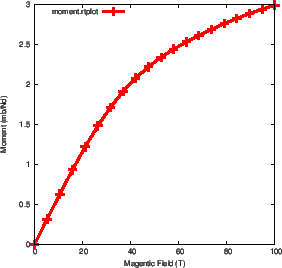
|
cpsingleion 10 100 1 results/Nd3p.sipf.levels.cef calculates the specific heat in the temperature interval 10-100 K with a step width of 1 K. Alternatively a comparison to experimental data can be made by cpsingleion 1 2 cpexp.dat results/Nd3p.sipf.levels.cef, where the temperatures are given in column 1 and the experimental specific heat in column 2 of file cpexp.dat. The calculated specific heat is compared to the experimental data and a standard deviation sta is calculated and output is written to stdout. Other quantities can be calculated using the options: -s (calculate entropy (J/molK) instead of cp), -f (calculate free energy (J/mol) instead of cp),-u (calculate magnetic energy (J/mol) instead of cp), -z (calculate partition sum instead of cp). Fig. 7 shows an example.
|
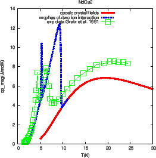
|
where is the exchange constant,  is the Bose factor
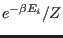 and 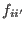 is the
Fermi function
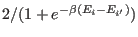. The program rhoso1ion can be used to calculate this
resistivity for magnetic ions in a crystal field. The wavefunctions
is the Bose factor
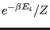 and 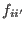 is the
Fermi function
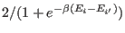. The program rhoso1ion can be used to calculate this
resistivity for magnetic ions in a crystal field. The wavefunctions  are taken from the file
results/Nd3p.sipf.levels.cef output by singleion. The matrix elements of
are calculated according to
the formulae of Dekker [27]. rhoso1ion calculates only the sum in the above equation, however.
The constant coefficient
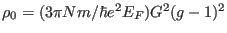 is set to unity, or may be specified using
the option -rho0 or -r. The syntax is otherwise the same as cpsingleion. For example, to
calculate the resistivity from 10 to 100 K in 1 K steps with 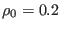 .cm, the command
are taken from the file
results/Nd3p.sipf.levels.cef output by singleion. The matrix elements of
are calculated according to
the formulae of Dekker [27]. rhoso1ion calculates only the sum in the above equation, however.
The constant coefficient
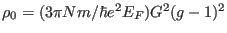 is set to unity, or may be specified using
the option -rho0 or -r. The syntax is otherwise the same as cpsingleion. For example, to
calculate the resistivity from 10 to 100 K in 1 K steps with 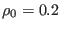 .cm, the command
rhoso1ion 10 100 1 -r 0.2 -i results/Nd3p.sipf.levels.cef
can be used. Alternatively, for comparison with data,
rhoso1ion 1 2 rhoexp.dat -r 0.2 -i results/Nd3p.sipf.levels.cef
can be used. Note that as the temperature dependence of the resistivity in this case is mainly a function of the Bose and Fermi functions, at high temperatures where all 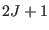 crystal field levels are thermally occupied, the resistivity will saturate to a value 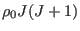.
Exercises: